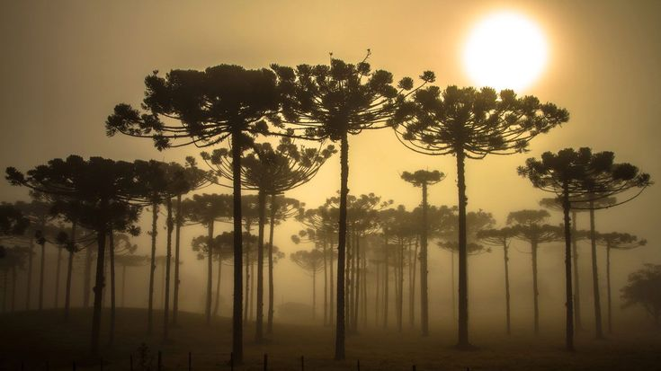

Bioma de Araucárias
Início
Imagine-se no fascinante bioma das Araucárias, um lugar cheio de vida e diversidade, onde uma incrível variedade de plantas e animais se adaptou às condições únicas desta região. As imponentes Araucárias, árvores que definem e dão caráter a esse ecossistema, dominam a paisagem de forma majestosa.
Esse é o lar de um clima subtropical, com chuvas distribuídas ao longo do ano, proporcionando um ambiente perfeito para o crescimento dessas árvores grandiosas. Nos próximos parágrafos, mergulharemos em alguns aspectos fundamentais desse bioma incrível, descobrindo seus segredos e maravilhas.
Distribuição
Exploraremos agora a notável distribuição do bioma das Araucárias, que se estende por vastas áreas, especialmente nos estados da acolhedora região sul do Brasil. Essa extensão oferece um habitat único para diversas espécies, revelando padrões fascinantes ao analisarmos sua distribuição espacial e os desafios associados à sua conservação.
Nossa jornada nos levará a examinar de perto as regiões onde as imponentes Araucárias florescem, destacando a beleza singular encontrada nos estados do sul do Brasil. Acompanharemos os esforços dedicados à preservação dessas áreas cruciais para a biodiversidade, desvendando os segredos e maravilhas desse bioma extraordinário que enriquece a região sul do nosso país.
Ecologia
A ecologia do bioma de Araucárias revela-se como um intricado e fascinante ballet da natureza. A interação harmoniosa entre plantas, animais e o ambiente circundante desempenha um papel crucial na manutenção do equilíbrio ecológico. Nossa jornada nos levará a descobrir os intricados laços que unem as diferentes espécies, revelando como coexistem e dependem umas das outras para perpetuar a riqueza desse ecossistema.
Além disso, adentraremos as profundezas desse bioma extraordinário para explorar as adaptações únicas que muitas espécies desenvolveram ao longo do tempo. Cada ajuste, uma resposta sagaz à complexidade deste ambiente específico, nos mostrará como a natureza é mestra na arte da sobrevivência e prosperidade.
Importância econômica e cultural
O bioma de Araucárias não se destaca apenas por suas características biológicas, mas também pela sua importância econômica e cultural que transcende suas fronteiras. Vamos analisar como esse ecossistema influencia de maneira significativa as comunidades locais, proporcionando recursos essenciais e desempenhando um papel fundamental nas tradições culturais enraizadas na região.
Nossa exploração não se limitará a isso; vamos também investigar as oportunidades existentes para harmonizar o desenvolvimento econômico com a conservação responsável deste bioma precioso. Ao buscar um equilíbrio entre o progresso e a preservação, visamos garantir um futuro sustentável para as gerações vindouras.
Conservação
Preservar o pinheiro brasileiro, ou Araucária, é essencial, pois está ameaçado de extinção. Além de manter a diversidade ecológica, a Araucária impacta positivamente o ciclo da água, é culturalmente significativa e contribui para evitar a erosão do solo. A conservação é crucial para manter seus genes importantes em meio às mudanças climáticas. Urgem ações imediatas, como reflorestamento e proteção, para assegurar a sobrevivência dessa espécie, que é não só parte vital do ecossistema, mas também parte importante da cultura brasileira.
Proteção legal
A proteção legal do bioma de Araucárias remonta à Carta Régia de 13 de março de 1797, que reservou os pinheiros exclusivamente para uso da Coroa portuguesa. Entretanto, a exploração descontrolada ganhou força, atingindo seu ápice no século XX.
Diante da iminente ameaça de exaustão da espécie, surgiram novas leis. A Portaria Normativa DC n° 20, de 27 de setembro de 1976, do Instituto Brasileiro de Desenvolvimento Florestal, estabeleceu medidas para proteger as sementes, regulamentando a colheita e comercialização do pinhão, e proibindo o abate de árvores com pinhas na época da queda de sementes.
No entanto, até meados da década de 1980, não havia restrições significativas à exploração indiscriminada das florestas de araucária. Planos de Exploração Florestal estabeleceram limites generosos, permitindo o corte de praticamente todos os indivíduos com diâmetro de tronco acima de 40 cm.